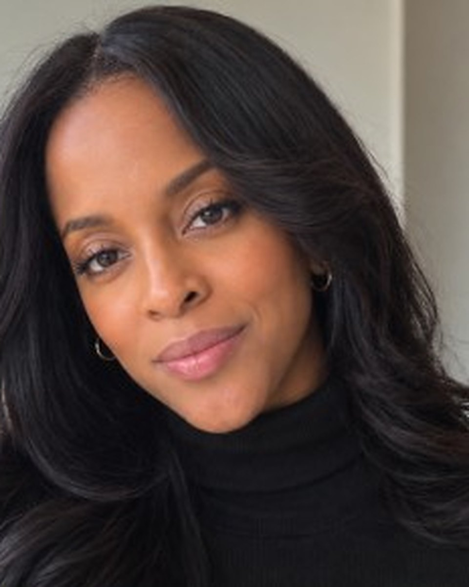

Protect the talent. Shape the opportunity. Build what lasts.
Representation for coaches and athletes in every sport, with a specialty in uplifting women: the coaches and assistants the big agencies overlook, and the athletes and families navigating NIL. Contract-trained, partnership-tested, and led by a former Division I athlete.
The coaches the big agencies overlook.
The largest agencies compete for Power-conference head coaches and star athletes. Women coaches and mid-career assistants, especially at mid-major, Division II, and Division III programs and in sports beyond basketball, rarely get an advocate. That's who Dexter Sports Co. is built for.
Talk with Kim about your careerof full-time assistant coaches are women: the pipeline we serve
of coaches for women's college teams are women (2024)
coaches of men's college teams are women
of head coaches of women's teams at 94 Division I schools are women of color (2025–26). 44% of those schools have none.
of head coaches of women's teams at 94 Division I schools are women (2025–26), the first decline in 13 years
of NCAA varsity athletes have been women since the 1990s
*, ** See sources at the bottom of this page.
More women in the game than ever.
Record participation and a fast-growing NIL market mean more opportunities, and more contracts and offers that deserve a careful advocate.
Two specialties. One advocate.
From the next contract to the first NIL offer, we help clients understand what's on the table, what it really costs, and what it means for the future.
Experience, access, and an advocate's instincts.
A former NCAA Division I volleyball player at Howard University, Kim has lived the student-athlete journey, from junior college to Division I. She's spent the decade since closing partnerships, and now brings that deal-making to coaches and athletes.
“I want clients to feel comfortable asking questions and confident that someone is paying attention to the details that affect their livelihood.” — Kim Dexter

Contract-trained
Juris Master, Florida State: legal risk management, contracting & compliance.
A proven closer
CFRE with 10+ years in corporate partnerships, sponsorships, and major gifts.
Inside the university
Development and external relations at an SEC university.
Been in your shoes
Former Howard University Division I volleyball student-athlete.
Before You Sign: the athlete family NIL toolkit.
A 23-page guide and fillable workbook for evaluating offers, asking informed questions, and managing brand partnerships. Free with Kim's monthly NIL newsletter.
- Offer snapshot, deliverable planner & compensation worksheets
- Questions to bring to counsel on rights & exclusivity
- Eight ready-to-adapt messages for brands
Mission and margin, moving together.
Our business model directly advances outcomes for women in sport. Impact is built in, not bolted on.
Women-owned
Founded and led by Kim Dexter: ownership and decisions rest with a woman operator in a male-dominated field.
Women coaches, advanced
We prioritize placing and advancing women into higher-paid, higher-visibility roles.
Youth opportunity
NIL guidance helps athletes and families, including young women, build value early and equitably.
Aligned economics
Success-based fees mean we win only when our clients win.
The right introductions change everything.
Relationships across athletics, business, and professional services mean clients get access to the people who can open doors, and the professionals who make sure it's done right.
Investors and strategic partners
Deals done, careers moved forward.
Trusted by coaches, families, and partners.
Practical thinking on contracts, NIL, and the business of sport.
Kim Dexter & Dexter Sports Co. in the press
Good questions are where good decisions start.
Don't see yours? Ask Kim directly.
Ask a questionRepresentation, partnerships, referrals, or a good conversation.
Tell us where you are and what's next. Have a deadline? Use urgent offer help.
Headquartered in Charlotte, NC, a central hub on the East Coast, we serve clients from the Mid-Atlantic down through the Northeast and Southeast, and across the Midwest and West Coast.
Sources
- * The Collective Think Tank, Women in NCAA Intercollegiate Athletics: The Legacy Revisited (March 2026), as reported in "Report Examines Women's Progress in Collegiate Athletics," WIA Report, March 2026. Data covers 1,000+ NCAA schools across Divisions I, II, and III.
- ** Tucker Center for Research on Girls & Women in Sport (University of Minnesota) with WeCOACH, Women in College Coaching Report Card, 2025–26 (94 NCAA Division I institutions in seven conferences), as reported in "Report Finds Recent Decline in the Number of Women Head Coaches in Collegiate Athletics," WIA Report, July 2026.
- *** NCAA, "Women's sports reach record NCAA participation as leadership roles keep rising" (March 2026), drawing on the NCAA Sports Sponsorship and Participation Rates Report (2024–25 data) and the NCAA Demographics Database. See also "A record number of NCAA student-athletes participated in 2024-25" (September 2025).
- **** National Federation of State High School Associations (NFHS), "Participation in High School Sports Hits Record High with Sizable Increase in 2024-25," September 9, 2025 (2024–25 High School Athletics Participation Survey).
- ***** Opendorse, NIL at 3: The Annual Opendorse Report (July 2024). Market figures are Opendorse projections; commercial = brand, fan, and sponsor deals; collective = donor-funded NIL collectives.